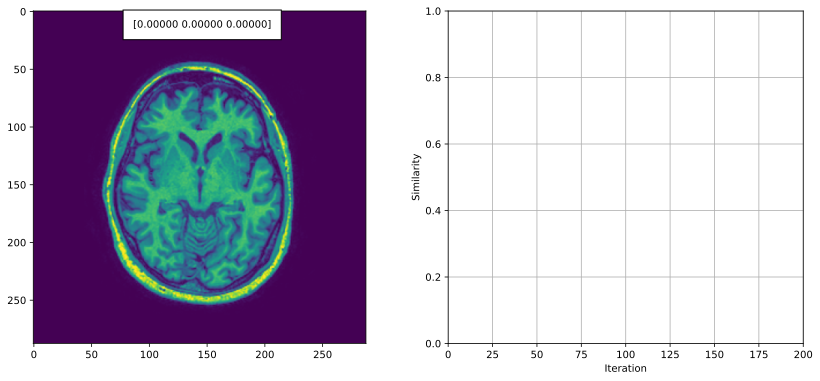

Project 1: Image registration
Contents:
Preliminary guided project work
Getting started
Selecting corresponding point pairs
Point-based registration
Point-based affine image registration
Evaluation of point-based affine image registration
Intensity-based registration
Comparing the results of different registration methods
Open-ended project work

Goal
Develop Python code for point-based and intensity-based (medical) image registration. Propose and investigate a suitable research question of your choice. Use the developed code to perform image registration and evaluate and analyze the results.
The dataset you will be using in the first project originates from the MRBrainS medical image analysis challenge. It consists of 18 traverse slices of MR brain scans with two different sequences: T1-weighted and T2-FLAIR (3 patients \(\times\) 3 slices per patient \(\times\) 2 modalities). Please see the Getting started assignment below for more details on the dataset.
The assignment consists of two parts, as a first step there is preliminary guided project work, and as a second step you must investigate a suitable research question based on the methods you have developed. A research question based on the preliminary guided project work below, completing the programming tasks and answering the theory questions, is the minimal solution to this project. If this is done well and accompanied by a suitable report, this will be graded with a ‘sufficient’ grade. To achieve higher grades, you need to go beyond the minimal solution. You should use what you have implemented and the available data to come up with and answer a suitable research question. Write about this in your report.
Deliverables
A completed version of this notebook, the documented python code that you developed, and a report describing your research question, results and analysis. The report is expected in a short, concise format. It focusses on your specific research questions, results and discussion. The lecturers already know the background, the data and the general methodology. Your report therefore does not need to include an introduction on the clinical problem nor explanations of the background of image registration. You do have to include your design choices and motivation thereof.
Aim to present your most important findings in the main body of the report and (if needed) any additional information in an appendix. The following report structure is suggested for the main body of the report:
Introduce research question and hypothesis with its motivation (0.5 page)
Study design: which data did you use, what are the requirements of your method, why did you make certain choices. Be as complete as possible w.r.t. the components of a study design. (0.5 page)
Method, experiments and results for each research question (2 pages)
Discussion section with analysis of the results. (1 page)
Contributions: a brief description by each group member of their activities in the project which can be used to to adjust individual grades to reflect a student’s (lack of) contribution to the group
If you use large language models (such as ChatGPT) in your course work, you are required to declare how and for what they were used and to include a reflection on the use of such tools.
The page lengths above are indications. You are free to adapt them, with the constraint of a maximum length of five pages for the first four items listed.
The report must be submitted as a single PDF file. The documented code must be submitted as a single archive file (e.g. zip or 7z) that is self-contained and can be used to reproduce the results in the report.
Note that there is no single correct solution for the project. You have to demonstrate to the reader that you understand the methods that you have studied and can critically analyze the results of applying the methods. Below, you can find a set of assignments (guided project work) that will help you get started with the project work and, when correctly completed, will present you with a minimal solution. Solutions which go beyond these assignments are of course encouraged. Additionally, include the solutions to the preliminary guided project work within this notebook in the archive file.
Assessment
The rubric that will be used for assessment of the project work is given in this table. Please check this carefully!
[1]:
%load_ext autoreload
%autoreload 2
Preliminary guided project work

A. Getting started
As an introduction, you will get familiar with the dataset that will be used in the first project and the control point selection tool that can be used to annotate corresponding points in pairs of related images. The annotated points can later be used to perform point-based registration and evaluation of the registration error.
Dataset
The image dataset is located in the image_data subfolder of the code for the registration exercises and project. The image filenames have the following format: {Patient ID}_{Slice ID}_{Sequence}.tif. For example, the filename 3_2_t1.tif is the second slice from a T1-weighted scan of the third patient. Every T1 slice comes in two versions: original and transformed with some random transformation that can be
identified with the _d suffix in the filename. This simulates a registration problem where you have to register two image acquisitions of the same patient (note however that some of the transformations that were used to simulate the second set of images are not realistic for brain imaging, e.g. brain scans typically do not encounter shearing between consecutive acquisitions).
Question 1:
With this dataset we can define two image registration problems: T1 to T1 registration (e.g. register 3_2_t1_d.tif to 3_2_t1.tif) and T2 to T1 registration (e.g. register 3_2_t2.tif to 3_2_t1.tif). Which one of these can be considered inter-modal image registration and which one intra-modal image registration?
Selecting corresponding point pairs
A function called cpselect is provided to select control points in two different images. This function provides two numpy arrays of cartesian coordinates, one array for each image, of points selected in the two images. The coordinate format is a numpy array with the X and Y on row 0 and 1 respectively, and each column being a point.
Calling the function will cause a new interactive window to pop up, where you will see your two images and some instructions. For convenience, the instructions can also be found below:
First select a point in Image 1 and then its corresponding point in Image 2. This pattern should be repeated for as many control points as you need. If you do not follow this pattern, the output arrays will be incorrect.
Left Mouse Button to create a point.
Right Mouse Button/Delete/Backspace to remove the newest point.
Middle Mouse Button/Enter to finish placing points.
Task 1:
Test the functionality of cpselect by running the following code example:
[2]:
import sys
sys.path.append("../code")
import registration_util as util
I_path = '../data/image_data/1_1_t1.tif'
Im_path = '../data/image_data/1_1_t1_d.tif'
X, Xm = util.cpselect(I_path, Im_path)
print('X:\n{}'.format(X))
print('Xm:\n{}'.format(Xm))
---------------------------------------------------------------------------
ImportError Traceback (most recent call last)
Cell In[2], line 8
4
5 I_path = '../data/image_data/1_1_t1.tif'
6 Im_path = '../data/image_data/1_1_t1_d.tif'
7
----> 8 X, Xm = util.cpselect(I_path, Im_path)
9
10 print('X:\n{}'.format(X))
11 print('Xm:\n{}'.format(Xm))
File D:\Developer\GitHub\8be030-mia-docs\docs\source\reader\../code\registration_util.py:75, in cpselect(imagePath1, imagePath2)
72 image2 = plt.imread(imagePath2)
74 #ensure that the plot opens in its own window
---> 75 get_ipython().run_line_magic('matplotlib', 'qt')
77 #set up the overarching window
78 fig, axes = plt.subplots(1,2)
File ~\.conda\envs\8be030\Lib\site-packages\matplotlib\pyplot.py:424, in switch_backend(newbackend)
421 return
422 old_backend = rcParams._get('backend') # get without triggering backend resolution
--> 424 module = backend_registry.load_backend_module(newbackend)
425 canvas_class = module.FigureCanvas
427 required_framework = canvas_class.required_interactive_framework
File ~\.conda\envs\8be030\Lib\site-packages\matplotlib\backends\registry.py:317, in BackendRegistry.load_backend_module(self, backend)
303 """
304 Load and return the module containing the specified backend.
305
(...) 314 Module containing backend.
315 """
316 module_name = self._backend_module_name(backend)
--> 317 return importlib.import_module(module_name)
File ~\.conda\envs\8be030\Lib\importlib\__init__.py:88, in import_module(name, package)
86 break
87 level += 1
---> 88 return _bootstrap._gcd_import(name[level:], package, level)
File <frozen importlib._bootstrap>:1395, in _gcd_import(name, package, level)
File <frozen importlib._bootstrap>:1360, in _find_and_load(name, import_)
File <frozen importlib._bootstrap>:1334, in _find_and_load_unlocked(name, import_)
File <frozen importlib._bootstrap>:950, in _load_unlocked(spec)
File <frozen importlib._bootstrap_external>:1023, in _LoaderBasics.exec_module(self, module)
File <frozen importlib._bootstrap>:488, in _call_with_frames_removed(f, *args, **kwds)
File ~\.conda\envs\8be030\Lib\site-packages\matplotlib\backends\backend_qtagg.py:9
5 import ctypes
7 from matplotlib.transforms import Bbox
----> 9 from .qt_compat import QT_API, QtCore, QtGui
10 from .backend_agg import FigureCanvasAgg
11 from .backend_qt import _BackendQT, FigureCanvasQT
File ~\.conda\envs\8be030\Lib\site-packages\matplotlib\backends\qt_compat.py:130
128 break
129 else:
--> 130 raise ImportError(
131 "Failed to import any of the following Qt binding modules: {}"
132 .format(", ".join([QT_API for _, QT_API in _candidates]))
133 )
134 else: # We should not get there.
135 raise AssertionError(f"Unexpected QT_API: {QT_API}")
ImportError: Failed to import any of the following Qt binding modules: PyQt6, PySide6, PyQt5, PySide2
B. Point-based registration
Point-based affine image registration
From the provided dataset for this project, select one pair of T1 image slices (e.g. 3_2_t1.tif and 3_2_t1_d.tif) and use my_cpselect to select a set of corresponding points. Then, compute the affine transformation between the pair of images with ls_affine and apply it to the moving image using image_transform.
Repeat the same for a pair of corresponding T1 and T2 slices (e.g. 3_2_t1.tif and 3_2_t2.tif).
Evaluation of point-based affine image registration
Question 2:
Describe how you would estimate the registration error. (Hint: Should you use the same points that you used for computing the affine transformation to also compute the registration error?) How does the number of corresponding point pairs affect the registration error? Motivate all your answers.
C. Intensity-based registration
Comparing the results of different registration methods
The following Python script (provided as intensity_based_registration_demo()) performs rigid intensity-based registration of two images using the normalized-cross correlation as a similarity metric:
[3]:
%matplotlib inline
import sys
sys.path.append("../code")
from registration_project import intensity_based_registration_demo
intensity_based_registration_demo()
---------------------------------------------------------------------------
NameError Traceback (most recent call last)
Cell In[3], line 6
2 import sys
3 sys.path.append("../code")
4 from registration_project import intensity_based_registration_demo
5
----> 6 intensity_based_registration_demo()
File D:\Developer\GitHub\8be030-mia-docs\docs\source\reader\../code\registration_project.py:74, in intensity_based_registration_demo()
71 x += g*mu
73 # for visualization of the result
---> 74 S, Im_t, _ = reg.rigid_corr(I, Im, x, return_transform=True)
76 clear_output(wait = True)
78 # update moving image and parameters
File D:\Developer\GitHub\8be030-mia-docs\docs\source\reader\../code\registration.py:358, in rigid_corr(I, Im, x, return_transform)
355 Th = util.t2h(T, x[1:]*SCALING)
357 # transform the moving image
--> 358 Im_t, Xt = image_transform(Im, Th)
360 # compute the similarity between the fixed and transformed
361 # moving image
362 C = correlation(I, Im_t)
File D:\Developer\GitHub\8be030-mia-docs\docs\source\reader\../code\registration.py:122, in image_transform(I, Th, output_shape)
116 Xh = util.c2h(X)
118 #------------------------------------------------------------------#
119 # TODO: Perform inverse coordinates mapping.
120 #------------------------------------------------------------------#
--> 122 It = ndimage.map_coordinates(I, [Xt[1,:], Xt[0,:]], order=1, mode='constant').reshape(output_shape)
124 return It, Xt
NameError: name 'Xt' is not defined

Task 2:
By changing the similarity function and the initial parameter vector, you can also use this script to perform affine registration and use mutual information as a similarity measure. Do not forget to also change the transformation for the visualization of the results.
Using the provided dataset and the functions that you have implemented in the exercises, perform the following series of experiments:
Rigid intensity-based registration of two T1 slices (e.g.
1_1_t1.tifand1_1_t1_d.tif) using normalized cross-correlation as a similarity measure.Affine intensity-based registration of two T1 slices (e.g.
1_1_t1.tifand1_1_t1_d.tif) using normalized cross-correlation as a similarity measure.Affine intensity-based registration of a T1 and a T2 slice (e.g.
1_1_t1.tifand1_1_t2.tif) using normalized cross-correlation as a similarity measure.Affine intensity-based registration of two T1 slices (e.g.
1_1_t1.tifand1_1_t1_d.tif) using mutual information as a similarity measure.Affine intensity-based registration of a T1 slice and a T2 slice (e.g.
1_1_t1.tifand1_1_t2.tif) using mutual information as a similarity measure.
Compare the results from each experiment. If a method fails, describe why you think it fails. Note that you will most likely have to try different values for the learning rate in each experiment in order to find the one that works best.
Open-ended project work
Define and motivate one research question that you will investigate. This can be a question relating to a method (e.g. what is the impact of X on a particular method) or relating to the problem (e.g. does a specific method fail in specific cases). It is recommended to get feedback on your research question from the teaching assistants.